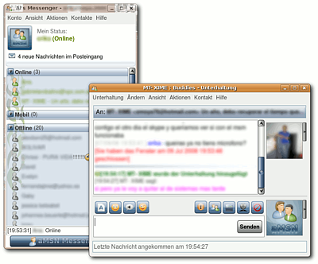

aMSN
Archivierte Anleitung
Dieser Artikel wurde archiviert, da er - oder Teile daraus - nur noch unter einer älteren Ubuntu-Version nutzbar ist. Diese Anleitung wird vom Wiki-Team weder auf Richtigkeit überprüft noch anderweitig gepflegt. Zusätzlich wurde der Artikel für weitere Änderungen gesperrt.
Anmerkung: MSN wurde Anfang 2013 eingestellt.
Zum Verständnis dieses Artikels sind folgende Seiten hilfreich:
aMSN  ist ein Windows Live Messenger-Klon für Linux (auch für Windows erhältlich) mit einer Tk-Oberfläche. Es beherrscht nur das Protokoll .NET Messenger Service (auch bekannt als MSN oder WLM), dafür allerdings mit Webcam-Unterstützung, Dateiübertragung und vielen weiteren Zusätzen. Wer auch andere Protokolle nutzen will, sollte sich die Instant-Messenger-Übersicht ansehen.
ist ein Windows Live Messenger-Klon für Linux (auch für Windows erhältlich) mit einer Tk-Oberfläche. Es beherrscht nur das Protokoll .NET Messenger Service (auch bekannt als MSN oder WLM), dafür allerdings mit Webcam-Unterstützung, Dateiübertragung und vielen weiteren Zusätzen. Wer auch andere Protokolle nutzen will, sollte sich die Instant-Messenger-Übersicht ansehen.
Funktionen:
Event-Alarm
Erweiterbar mit Plugins
Auswählbare Smileys 
Smileys mit Sounds sind möglich
In mehreren Sprachen verfügbar (etwa 40 Sprachen)
Datenübertragung möglich
Chat-Logs sind verfügbar
WebCam wird unterstützt
Kontakte kann man in Gruppen sortieren
Unerwünschte Benutzer kann man blocken
Statistiken für Log-Dateien
Installation¶
Es gibt zwei Möglichkeiten, aMSN zu installieren. Über die offiziellen Paketquellen kann man folgendes Paket installieren [1]:
amsn (universe )
 mit apturl
mit apturl
Paketliste zum Kopieren:
sudo apt-get install amsn
sudo aptitude install amsn
PPA¶
Je nach Ubuntu-Version kann eine aktuellere Version von aMsn aus dem "Personal Package Archiv" (PPA) [2] der Entwickler installiert werden. Dieses enthält die aktuelle Entwicklungsversion.
Adresszeile zum Hinzufügen des PPAs:
ppa:amsn-daily/ppa
Hinweis!
Zusätzliche Fremdquellen können das System gefährden.
Ein PPA unterstützt nicht zwangsläufig alle Ubuntu-Versionen. Weitere Informationen sind der  PPA-Beschreibung des Eigentümers/Teams amsn-daily zu entnehmen.
PPA-Beschreibung des Eigentümers/Teams amsn-daily zu entnehmen.
Damit Pakete aus dem PPA genutzt werden können, müssen die Paketquellen neu eingelesen werden.
Nach dem Aktualisieren der Paketquellen lässt sich das Paket aus dem PPA installieren [1]:
amsn (ppa)
mit apturl
Paketliste zum Kopieren:
sudo apt-get install amsn
sudo aptitude install amsn
Benutzung/Konfiguration¶
aMSN kann nach erfolgreicher Installation über einen Startmenü-Eintrag in den Menüs der gängigen Desktops oder über den Befehl amsn gestartet werden.
Konto einrichten¶
Wenn man sein Profil auf dem PC speichert, so kann man die Einstellungen des MSN-Profil verändern und der Benutzername und das Passwort (wenn erwünscht) müssen nicht mehr eingegeben werden.
Wer sein Profil speichern will, geht auf "Neues Profil hinzufügen", tippt seinen Namen ein und klickt auf "Ok". Dann geht man auf "Mit existierenden Profil anmelden", wählt sein Profil aus und tippt sein Passwort ein. Wenn das Passwort gesichert werden soll, klickt man zusätzlich auf "Passwort speichern".
Falls man sein Profil nicht auf dem PC speichern will, so geht man auf "Anmelden mit Standardkonfiguration". Dort tippt man seinen Namen und sein Passwort ein.
Problembehebung¶
Sollte es beim Start von aMSN zu folgendem Fehler kommen:
"Loading TkCximage failed. This module is needed to run aMSN. Please compile aMSN first, instructions on how to compile are located in the file INSTALL."
schaffen die beiden folgenden Befehle in einem Terminal [3] Abhilfe.
sudo mv /usr/bin/wish /usr/bin/wish_bak sudo ln -s /usr/bin/wish8.4 /usr/bin/wish


 Übersichtsartikel
Übersichtsartikel- Erstellt mit Inyoka
-
 2004 – 2017 ubuntuusers.de • Einige Rechte vorbehalten
2004 – 2017 ubuntuusers.de • Einige Rechte vorbehalten
Lizenz • Kontakt • Datenschutz • Impressum • Serverstatus -
Serverhousing gespendet von